Goal Alignment
My Goals:
I aim to design a contemporary, minimalist website that embodies a sleek and sophisticated aesthetic while effectively presenting information to visitors. As they navigate through my portfolio, users will be able to explore my web design expertise and gain insight into my diverse range of projects and experiences.
My Users:
My aspiration for this website is to captivate individuals who share a mutual appreciation for similar design styles and aesthetics. By appealing to this audience, I hope to foster potential collaborations, establish meaningful connections, and ultimately attract prospective clients or partners who value the same creative vision and principles.
My Content:
My content I hope to showcase on this website is the design processes of my work, the detailed explanations for the decisions I’ve made and design elements I have implemented as well as a step by step documentation of my personal growth as a web developer from my time during this course.
Information Structure
The website boasts a well-structured and organised information layout, ensuring effortless navigation for users to locate desired content. The homepage spotlights a prominent header accompanied by a navigation menu, granting swift access to various website sections. In the main portion of the homepage, a concise introduction to the site and its creator is provided, accompanied by a prominent call-to-action button, encouraging further exploration.
The webpage is divided into three primary sections: blogs, design, and essays, with each having its own dedicated page. Within these sections, content is organised by categories or weeks, featuring distinct headings and titles for seamless navigation and content discovery. The website's design embraces minimalism, utilising a consistent colour scheme and typography, resulting in a cohesive and visually engaging user experience. Overall, the website's information architecture effectively showcases the work and delivers a clear and user-friendly experience for visitors.
User Flow

The user flow of the website begins with the homepage, where users are greeted with a welcoming header and a brief introduction to the creator. From there, they can navigate to the various sections of the website, including the blogs, design, portfolio, and essay section. The navigation bar is conveniently located at the top right-hand corner of the page, making it easy for users to access.
The blogs section is organised by week, with each week's blog post displayed next to its corresponding title. Users can scroll through each week's post, explore the designs of the website in the Design page and explore the creator portfolio. The design section is also easy to navigate, with each project displayed in its own dedicated page. Finally, the essay section provides placeholder space for the upcoming essay assignment. Overall, the website is designed to be user-friendly, with clear navigation and a clean layout, making it easy for users to access and engage with the content.
Style Process
Notes on Visual aesthetic:
The visual aesthetic of the website is modern and minimalist. The use of a neutral colour palette and clean typography creates a sleek and professional look. The layout is structured and organised, making it easy for the user to navigate and find the information they need. The addition of subtle shadow effects and faint underlines add depth and dimension to the design without being distracting. Overall, the website's visual aesthetic is both functional and aesthetically pleasing, reflecting a sophisticated and contemporary design style.
Possible visual design elements:
Fonts - The website mainly uses the sans-serif font family, which is commonly used for modern and minimalistic designs. The headings use a bold and large font size to draw attention, while the body text uses a smaller font size for readability. Overall, the font choices are appropriate for the minimalist aesthetic of the website.
Readability and legibility - The text on the website is easy to read due to the appropriate font size and contrast with the background. The use of white background and black text helps ensure legibility, the light grey underlines after each blog post subtlety shows the viewer the end of the blog post, but not so visible as to disturb the overall clean aesthetic of the page.
Colour - The website uses a limited colour palette with mostly neutral tones such as white, black, and shades of grey. This supports the minimalist and modern aesthetic of the website. The use of faint grey for underlines to subtly show the end of a blog and shadows to highlight the titles through contrast also contributes to the overall design.
Broad Design Sketches:
Style Guide
Goal and Aesthetic:
The goal of the website is to showcase the owner's digital art and design portfolio. The aesthetic of the website is modern and minimalistic, with a focus on simple and clean design elements.
Visual Design Elements:
Minimalistic style - The website embraces a minimalist design style, characterized by its clean and uncluttered layout, which exudes simplicity and elegance. Ample white space and limited text contribute to the minimalist aesthetic, ensuring a visually pleasing experience.
Readability and legibility - With the chosen fonts that prioritize legibility and readability, the website's text is presented in a clear and concise manner. This attention to typography enables users to effortlessly consume the content while maintaining a comfortable reading experience.
Colour Palette - The website employs a restrained color palette, primarily featuring shades of grey and white. This limited selection of colors not only preserves the minimalist look and feel but also imparts a sense of sophistication and modernity.
Shadow Effects - The subtle use of shadow effects on select headings and titles introduces depth and visual interest. These shadows serve to emphasize the text against the white background, drawing the viewer's attention and enhancing the overall design.
Typography - Consistent and straightforward typography is evident throughout the website, with headings in larger font sizes and body text in smaller sizes. This uniformity in type creates a cohesive appearance, making it easy for users to navigate the website and locate information with ease.
Alignment - The website demonstrates consistent alignment, contributing to its minimalist aesthetic. All elements adhere to a grid system and are centered within their respective containers, fostering a sense of order, balance, and harmony on each page.
Font - A modern, sans-serif font family is utilized, reflecting the prevailing minimalist design trend. The font size and weight are chosen to ensure not only optimal readability and legibility but also seamless integration with the overall minimalist style. The choice of font also contributes to the site's clean and contemporary appearance, which resonates with the target audience.
Final Design Sketches
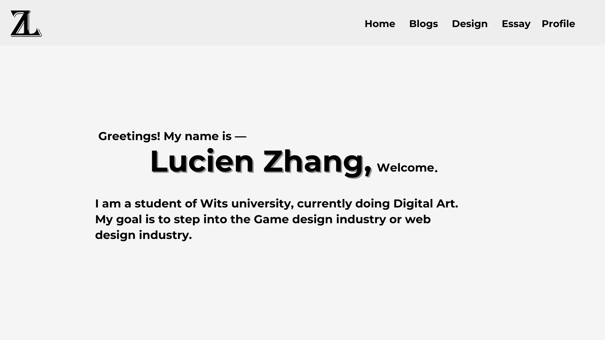 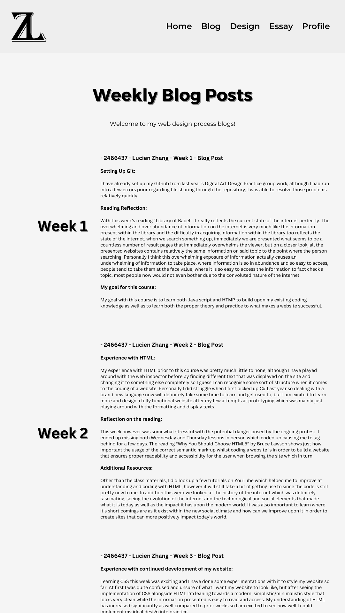 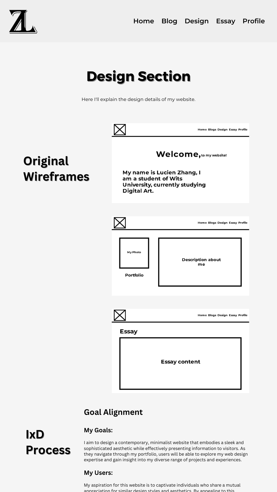 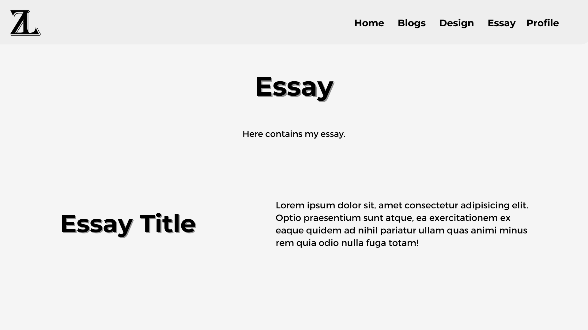 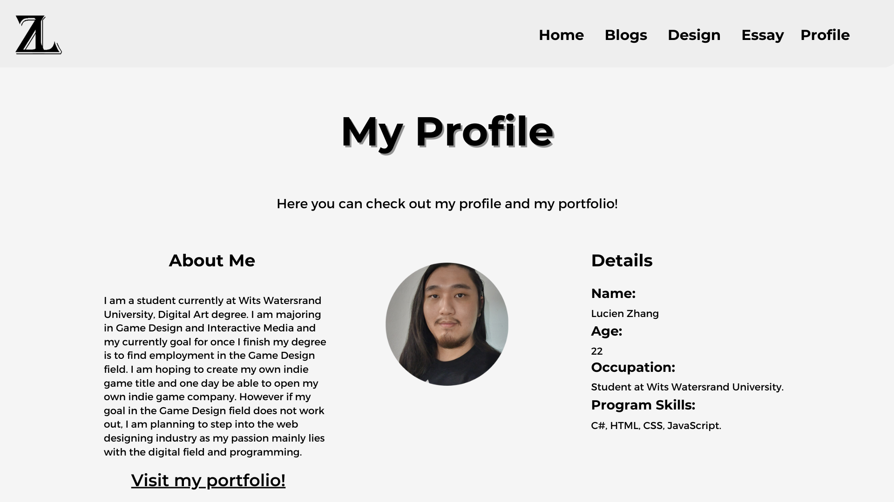 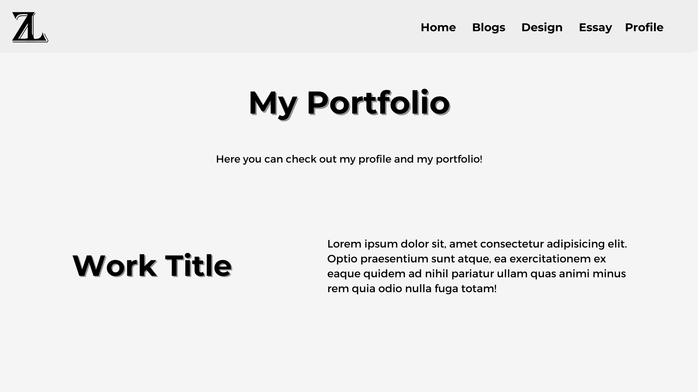1. The logo of my initials are presented on the top left of the website.
2. The navigation bar that allows the users to browse any pages they'd like.
3. A welcome message and introduction of my name.
4. A brief description of myself.
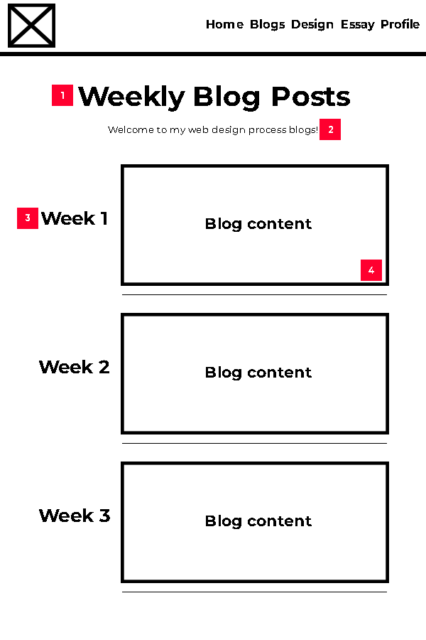1. The large title of the page.
2. A small description of the page.
3. The week title of the blog letting the user know which week's blog it is.
4. The section where the blog content will be placed.
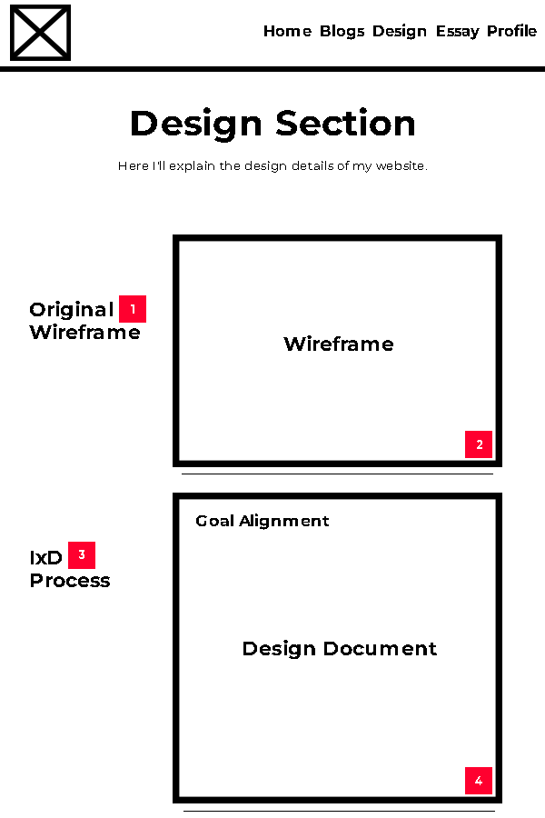1. The main title of the section of the design doc displayed, this one being the original wireframes.
2. The section where the pictures of the original wireframes will go.
3. The title for IxD Progress section.
4. The section where the IxD Process content will go.
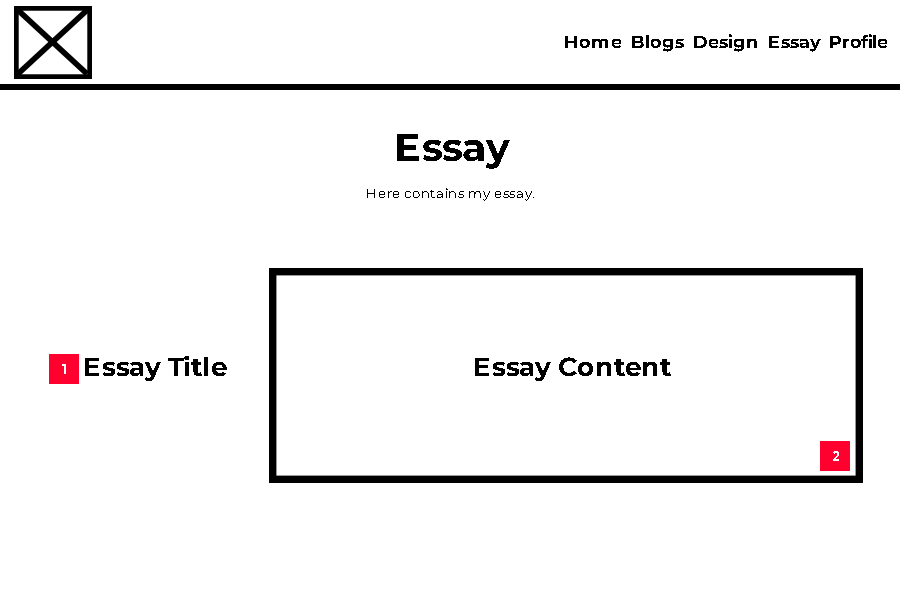1. Title of the Essay.
2. Section where the essay content will go.
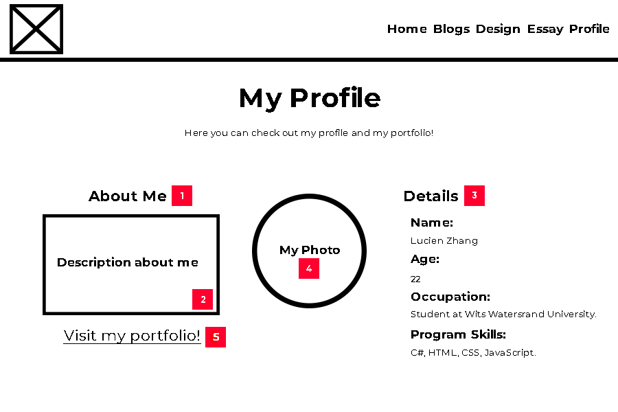1. "About Me" Title.
2. The section where it'll display a introduction of myself.
3. The Details section for my information.
4. Where my photo will be displayed.
5. The hyperlink to my portfolio page.
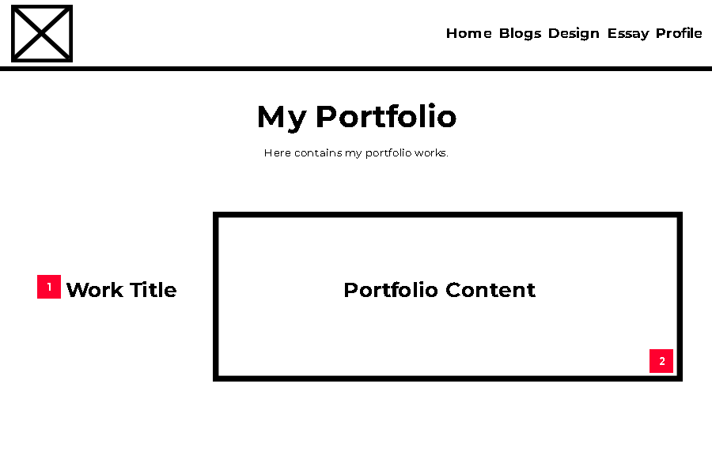1. The title of my portfolio work.
2. The section where my portfolio work will be displayed.